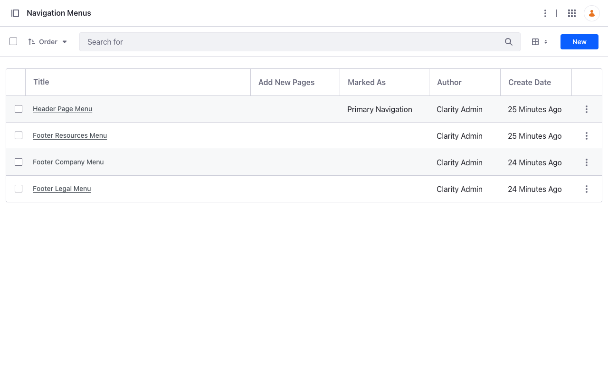
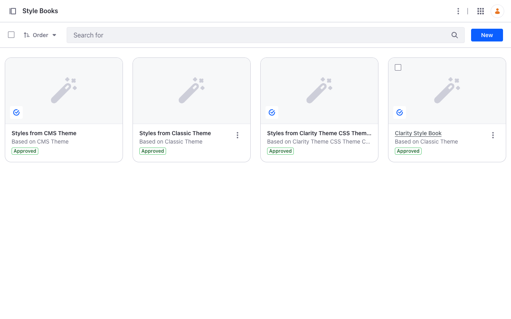
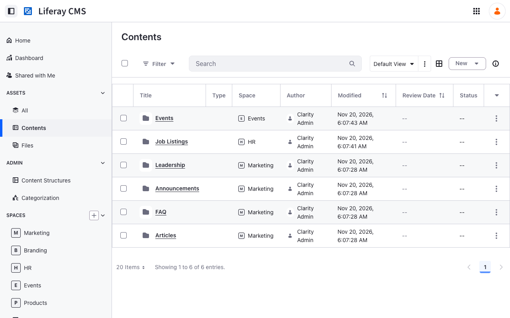
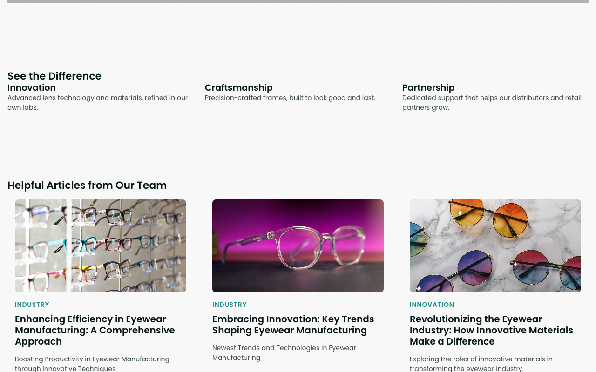
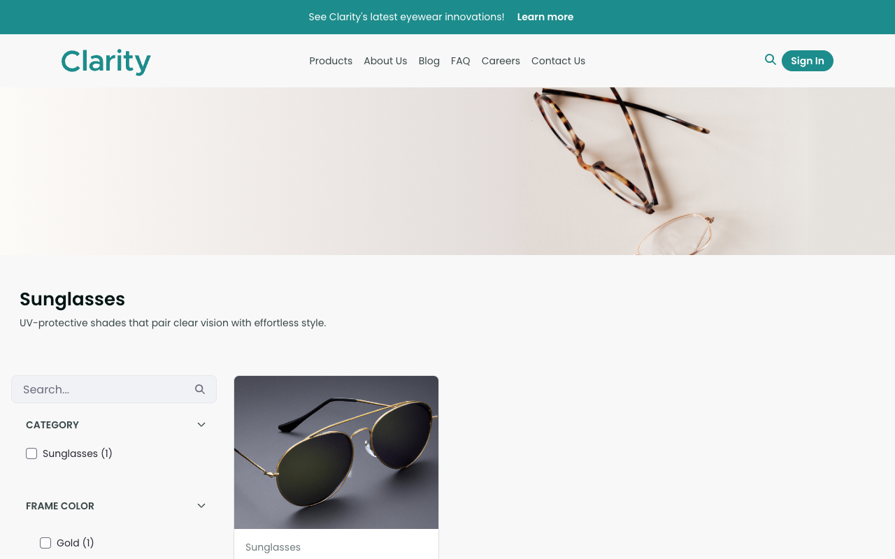
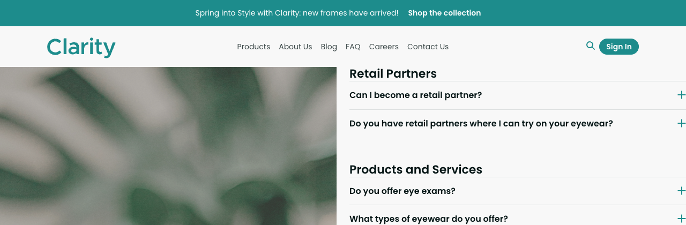
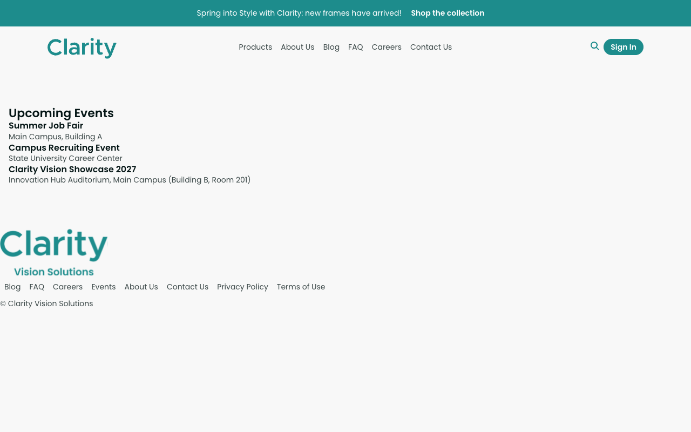
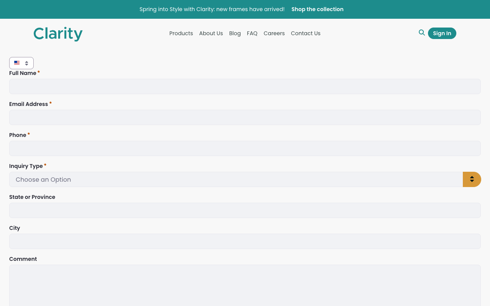
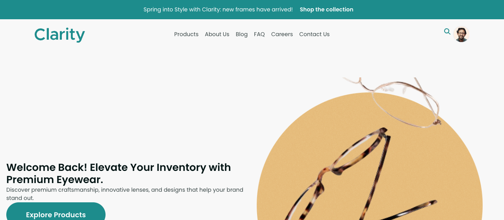

Building Enterprise Websites with Liferay and AI — Workbook
Over two days you build Clarity Vision Solutions' public enterprise website on Liferay DXP 2026.Q3. Every exercise is a prompt you give your AI coding agent, followed by a check you do yourself in Liferay. The agent does the typing; you set the requirement, read what it did, and confirm the result on screen before you build on it.
How to use this workbook
- Your agent works, you verify. Each ✅ Verify step tells you where to look in Liferay. Verification is read-only: open the screen, look, don't change anything. If what you see doesn't match, tell the agent what's wrong and let it fix it.
- Short sessions. Start a fresh agent session for each exercise, or each small group of related ones. The agent picks the project up from
solution-context.mdandsolution-index.yaml(Exercise S.1), and the skills in.claude/skills/(or.agents/skills/) tell it how Liferay behaves. - Prompts name their skill. The 🧩 line lists the skills the exercise relies on. You don't have to type them: the agent loads them from the prompt's wording. Naming one in the prompt helps a less capable agent.
- Every prompt that creates something says who may see it. Permission gaps fail silently: a page answers, a form saves, and only a visitor notices. Keep the access lines when you adapt a prompt.
- Personas. Some checks ask you to sign in as a persona (all passwords are
learn). Use a private browser window for a second persona, so you stay signed in as the admin in the other.
| Mark | Meaning |
|---|---|
| 🎯 | What you're building |
| 🧩 | Skills the exercise relies on (🆕 = written for this course) |
| 📖 | Concept to read before you start |
| 📋 | Steps you do yourself |
| 💬 | Prompt to paste into your agent |
| ✅ | How to check it worked, in Liferay |
| ⚠️ | A gotcha worth knowing before you start |
| ⭐ | Bonus challenge, if you finish early |
Roadmap
| Day | Level | You build | Original BEWL challenge |
|---|---|---|---|
| 1 | Setup | The course repository in VS Code, PostgreSQL, DXP, MCP server, context files | 2 |
| 1 | 1 — Users and permissions | Personas, user groups, roles, least-privilege permissions | 3 |
| 1 | 2 — Sites | The public site and the distributor portal, membership, site settings, instance home page | 4 |
| 1 | 3 — Pages and navigation | Page hierarchy, master pages, display page templates, navigation menus | 5, 6 |
| 1 | 4 — Fragments | The Clarity Components fragment set and page compositions | 7 |
| 1 | 5 — Design | Style book, Theme CSS client extension, favicon, logo | 8 |
| 1 | 6 — CMS content | Spaces, content structures, file structures, entries, taxonomy | 9, 10, 11, 14 |
| 2 | 7 — Displaying content | Mapping, collections, the FAQ page, the announcement bar | 12, 15 |
| 2 | 8 — Commerce | Catalog, specifications, products, channel, product pages | 16 |
| 2 | 9 — Headless APIs | API Explorer, batch imports of legacy content and products | 17 |
| 2 | 10 — Workflow and publishing | Approval workflow for articles and the site-wide announcement | 18 |
| 2 | 11 — Search | Job search page, facets, search blueprints, upcoming events | 19, 20 |
| 2 | 12 — Objects | Contact Us object, form, follow-up workflow, data set dashboard | 21 |
| 2 | 13 — Personalization | A Home page variant for distributors, by user group | 22 |
Challenge 1 (touring the finished site), Challenge 13 (ChatGPT content creation), the Liferay Data Platform overview and the performance tuning module aren't exercises in this course. Your instructor covers them in the slides.
The course avoids features Liferay has deprecated or moved to maintenance mode on 2026.Q3: it uses Liferay CMS instead of Web Content, Blogs, Documents and Media and Asset Libraries; workflow instead of Publications; Object fields instead of Custom Fields; and user-group targeting instead of DXP segments.
Day 1
Setup — Your workspace, Liferay DXP and the MCP server
Do this chapter once, on the first morning. It gets the course repository onto your computer and open in VS Code, gets Liferay DXP running on PostgreSQL, connects your AI agent to Liferay's MCP server, and seeds the two files every later session reads.
Before you start, finish the prerequisites: Git, JDK 21 and Blade (they build your client extensions), Docker running, the Liferay DXP and PostgreSQL images pulled (docker compose pull in the course folder), VS Code and your AI agent installed and signed in. Have the activation key file from your email at hand.
S.0 — Get the course repository and open it in VS Code
🎯 The course repository on your computer, open as a folder in VS Code, with a terminal and your agent's chat ready, and your agent reading the course's instructions.
🧩 None — you do this yourself, step by step.
📋 Steps:
- Pick a short folder for your courses. Use a path with no spaces, outside any folder synced by OneDrive, iCloud Drive or Dropbox: sync tools lock the files the build writes. We use
~/courseson macOS and Linux, andC:\courseson Windows. -
Open a terminal: the Terminal app on macOS or Linux, PowerShell on Windows. Create the folder and go into it.
macOS and Linux:
mkdir -p ~/courses cd ~/coursesWindows (PowerShell):
New-Item -ItemType Directory -Force C:\courses Set-Location C:\courses git config --global core.longpaths trueThe last line lets Git on Windows handle the long paths a Liferay workspace creates.
-
Clone the repository into a folder named
bewl-ai. You don't need a GitHub account:git clone https://github.com/Liferay-Community-APAC/liferay-course-building-enterprise-websites-ai.git bewl-aiIt takes a minute and ends with
Resolving deltas: 100%(ordone). -
Open the folder in VS Code. Start VS Code, choose File → Open Folder… (on macOS, File → Open…), select
courses/bewl-aiand click Open (Select Folder on Windows). Open the folder, not a file inside it: that's how your agent finds the course's instructions and skills.If you've installed VS Code's
codecommand,cd bewl-aithencode .does the same. -
Trust the folder. VS Code asks Do you trust the authors of the files in this folder? Click Yes, I trust the authors. In Restricted Mode, agents and the terminal can't work in the folder.
- Look around. In the Explorer (the top icon in the left bar) you see
.agents,.claude,catch-up,client-extensions,configs,context-source,docs,AGENTS.md,docker-compose.ymlandgradle.properties.client-extensionsis empty: your agent builds the site there. -
Open VS Code's terminal: Terminal → New Terminal. It opens at the folder's root, which the workbook calls the workspace root. Run:
git statusIt answers
On branch mainandnothing to commit, working tree clean. From now on, run every command in this terminal unless a step says otherwise. -
Open your agent's chat, as you did for the prerequisites check:
- Claude Code: click the Claude icon, or run Claude Code: Open from the Command Palette (View → Command Palette…).
- OpenAI Codex: click the Codex icon in the left bar.
- GitHub Copilot: open the Chat view (View → Chat) and switch the mode to Agent.
Sign in if it asks.
-
Send the prompt below. When your agent asks for permission to read files or run a command, read what it wants to do, then allow it. By default your agent asks before it changes files or runs commands; keep it that way for this course.
💬 Prompt:
Read this workspace's instructions (.claude/CLAUDE.md, or AGENTS.md if
that's the file you read) and answer in four short lines, without changing
anything: what this workspace is for, the Liferay DXP version named in
gradle.properties, the folder your skills come from, and the absolute path
of the workspace root.
✅ Verify:
- The answer names a Liferay Workspace for Clarity Vision Solutions,
dxp-2026.q3.10, and.claude/skills(Claude Code) or.agents/skills(other agents). - The workspace root it reports is the
bewl-aifolder you opened, and VS Code's status bar (bottom left) shows the branch main.
⚠️ If the agent says it can't find these files, VS Code has a file open instead of the folder, or a different folder: repeat step 4. If your agent offers to start Liferay or install something at this point, say no: you do that yourself in S.2.
S.1 — Seed the context files
🎯 Two files at the workspace root that let any new agent session pick up the project: solution-context.md (what Clarity is building) and solution-index.yaml (what's done and what's left).
🧩 None — the prompt below is self-contained.
📋 Steps: in your agent's chat (from S.0), send the prompt.
💬 Prompt:
We're building Clarity Vision Solutions' public enterprise website on Liferay
DXP during a two-day course. Seed two files at the workspace root:
solution-context.md and solution-index.yaml.
First confirm that context-source/clarity-brief.md and context-source/README.md
exist. Stop and tell me if either is missing; don't invent content.
solution-context.md: read the brief and write a short summary (one page, not
a copy): who Clarity is, the site's five goals, the personas with their
responsibilities, the two sites, and where the content lives (CMS Spaces).
Cite context-source files by path instead of copying them.
solution-index.yaml: a top-level "requirements" list with one entry per
requirement R1-R13 in section 8 of the brief, each with: id, title, level
(the number in the brief's "Built in" column), status: todo, and an empty
artifacts list.
Don't create or change anything else. Read both files back to me.
✅ Verify: open both files in VS Code. solution-context.md fits on a screen or two and names the personas; solution-index.yaml has 13 entries, all status: todo.
⚠️ Keep solution-context.md short. Every new session reads it, so a long file costs tokens on every prompt for the rest of the course.
S.2 — Start PostgreSQL and Liferay DXP
🎯 PostgreSQL and Liferay DXP 2026.Q3.10 running in Docker, with Liferay at http://localhost:8080.
🧩 None — you run these commands yourself, in your own terminal.
📖 Both run as Docker containers, defined in docker-compose.yml, so the steps are the same on macOS, Windows and Linux. Only Docker's memory setting (step 2) differs. Liferay's container shares a few folders with your workspace, under bundles/ (created on the first start): your agent deploys client extensions into bundles/osgi/client-extensions and reads the log in bundles/logs, as it would with a Liferay bundle installed on your computer.
📋 Steps:
- Copy the activation key file you received by email into
configs/local/deploy/: drag it from your email or Downloads folder onto that folder in VS Code's Explorer. It's git-ignored: it never leaves your computer. -
Give Docker at least 8 GB of memory. Liferay and its search engine need about 6 GB, and PostgreSQL needs some too. Your computer needs 16 GB of RAM or more.
macOS: open Docker Desktop → Settings (the gear icon) → Resources → Advanced, set Memory to 8 GB or more, then click Apply & restart.
Windows: Docker Desktop runs its containers in WSL 2, which sets the memory limit. In PowerShell, write the limit to
.wslconfigin your user folder, then restart WSL:Set-Content -Path "$env:USERPROFILE\.wslconfig" -Value "[wsl2]`nmemory=8GB" wsl --shutdownIf you already have a
.wslconfig, open it in VS Code instead and setmemory=8GBunder[wsl2]. Then start Docker Desktop again and wait for Engine running at the bottom left of its window.Linux: Docker Engine uses your computer's memory directly: nothing to set. Make sure your user can run
dockerwithoutsudo(docker psworks). If it can't, runsudo usermod -aG docker $USER, then log out and back in. If you use Docker Desktop for Linux, set its memory as on macOS. -
Start PostgreSQL and Liferay. Make sure Docker is running, then in VS Code's terminal, at the workspace root:
docker compose up -dIt creates three containers:
clarity-postgres,clarity-liferay-init(it prepares thebundles/folders, then exits) andclarity-liferay. If you didn't pull the images before the course, the first run downloads them (a few GB). -
Watch Liferay start:
docker compose logs -f liferayThe first start creates the database and takes several minutes. Wait for
Server startup in [...] milliseconds, then pressCtrl+C: that stops following the log, not Liferay.
✅ Verify:
docker compose psshowsclarity-postgresandclarity-liferayasrunning (healthy). Liferay readshealth: startinguntil it answers.http://localhost:8080shows the Liferay home page. Sign in asadmin@clarityvisionsolutions.comwith passwordlearn. The first sign-in shows a Terms of Use notice about Liferay Enterprise Search: read it and close it with Done.- In the Global Menu (the grid icon, top right) → Control Panel → Server Administration, the Properties → Portal Properties tab lists
jdbc.default.urlwithpostgresql.
⚠️ You start and stop Liferay, not the agent. Never ask the agent to run docker compose up, stop, restart or down: restarting Liferay drops the agent's MCP connection and interrupts your work. Your data stays in Docker volumes when you stop the containers (docker compose stop) or restart your computer; only docker compose down -v deletes it. If port 8080 or 5432 is already in use, stop the other program first.
⚠️ If Liferay restarts in a loop or stops with exit code 137, Docker doesn't have enough memory: redo step 2.
⚠️ Linux only: Liferay's container runs as user ID 1000 and writes its log files readable by that user only. If id -u doesn't print 1000 (it does for the first user on most Linux installs), your agent can't read bundles/logs: use Docker Desktop for Linux, or the Tomcat bundle below.
🔁 Optional: run Liferay as a Tomcat bundle instead of a container. Use this only if your instructor asks you to, or Docker can't give Liferay enough memory. You need the DXP bundle downloaded to ~/.liferay/bundles before the course. Start PostgreSQL alone, then unpack and start the bundle:
docker compose up -d postgres
blade server init
blade server start --tail
Wait for Server startup in [...] milliseconds. Stop it with blade server stop. Never run the bundle and the clarity-liferay container at the same time: both use port 8080 and the same database. Never ask the agent to run blade server start or stop: a server started inside an agent session stops when that session ends.
S.3 — Save the admin credentials for the agent
🎯 A credentials file every agent session finds on its own, so you never type a password into a chat.
🧩 None.
📋 Steps:
-
Create
configs/local/admin.propertiesyourself in VS Code (right-clickconfigs/localin the Explorer → New File…, typeadmin.properties, press Enter), with these two lines, then save it (File → Save):ADMIN_EMAIL=admin@clarityvisionsolutions.com ADMIN_PASSWORD=learn -
Send the prompt.
💬 Prompt:
Confirm configs/local/admin.properties exists and is listed in .gitignore.
Read the admin email and password from it, never printing the password, and
check they work: call GET /o/headless-admin-user/v1.0/my-user-account with
Basic auth on Liferay's HTTP port (CLAUDE.md says how to find it). Show me the name and emailAddress from the
response.
✅ Verify: the agent shows Clarity Admin and admin@clarityvisionsolutions.com, and its messages never contain the password.
S.4 — Turn on Liferay's MCP server
🎯 Your agent connected to Liferay's MCP server at http://localhost:8080/o/mcp, so it can call Liferay's APIs as a tool instead of hand-writing curl commands.
🧩 mcp-server
📖 What is MCP? The Model Context Protocol is a standard way for an AI agent to use tools. Liferay DXP 2026.Q3 ships an MCP server that exposes every headless API (sites, pages, CMS, objects, commerce, users…) as tools. The agent discovers them at runtime, reads each operation's schema, then calls it, all with the permissions of the user it authenticates as.
On 2026.Q3 the MCP server has two switches. The workspace already turns on the first one, the feature flag LPD-63311, in configs/local/portal-ext.properties. The second is the MCP Server instance setting. It's an ordinary OSGi configuration, so your agent can switch it on with a configuration file, live, without a restart.
📋 Steps:
- Send the prompt below. It turns the MCP server on and registers it in your agent's own configuration file.
- Restart your agent session (close and reopen the chat, or reload the VS Code window). Agents read their MCP configuration only when a session starts.
💬 Prompt:
Using the mcp-server skill, turn on and connect me to the Liferay MCP server
of this workspace's running DXP.
1. Enable the MCP Server instance setting with its OSGi configuration file,
in both bundles/osgi/configs (applies live) and configs/local/osgi/configs
(copied in again at every Liferay start). Don't restart Liferay.
2. Probe it: send a JSON-RPC initialize request to /o/mcp on Liferay's port,
with Basic auth from configs/local/admin.properties. Show me the
serverInfo it returns.
3. Register it as an HTTP (Streamable HTTP, not SSE) MCP server named
"liferay" in the configuration file of the agent I'm using right now:
.mcp.json for Claude Code, .vscode/mcp.json for GitHub Copilot,
.codex/config.toml for Codex. Authenticate with a Basic Authorization
header built from configs/local/admin.properties.
4. Add that configuration file to .gitignore: it contains a credential.
5. Tell me exactly how to restart my session so the server loads.
✅ Verify:
- In Liferay, open the Global Menu → Control Panel → Instance Settings → Platform → MCP Server: Enabled is checked. Don't change it.
- After the restart, approve the project's
liferayserver if your agent asks (Claude Code does, for servers in.mcp.json), then open your agent's MCP server list (Claude Code: type/mcp; Copilot: MCP: List Servers in the Command Palette; Codex: its MCP settings).liferayis listed as connected. - Ask the agent "Using the liferay MCP server, list the tool sets it offers", and check it answers from the server, not from memory.
⚠️ If the server shows as connected but lists no tools, Liferay was restarted since your session started: reconnect or restart the session.
S.5 — Read the terrain
🎯 The agent confirms the facts every later prompt depends on, before anything is built.
💬 Prompt:
Read .claude/CLAUDE.md (or .agents/ if that's what you use) and tell me,
without changing anything: the workspace root, the DXP version from
gradle.properties, the database Liferay is using, whether Liferay runs in Docker or as a
Tomcat bundle and on which port, how you
authenticate, whether the liferay MCP server is available to you, and which
sites already exist in the instance.
✅ Verify: compare the answer with gradle.properties, configs/local/portal-ext.properties and Control Panel → Sites. The only sites are Liferay's defaults: the Clarity sites don't exist yet.
From here on, work in short agent sessions. Start a new session (or /clear) when you move to an exercise that doesn't build directly on the previous one. A fresh session costs fewer tokens and stays focused, and nothing is lost: it picks the project up from solution-context.md and solution-index.yaml.
Level 1 — Users and permissions
📖 Clarity's website is built by a team, not by one administrator. Before anyone can contribute, the instance needs their accounts, a way to group them (user groups), and roles that grant each person only what their work requires. A regular role applies everywhere in the instance; a site role applies only inside the sites where it's assigned. You'll give the roles their permissions once the site exists, in Level 2.
1.1 — Create Clarity's user groups, roles and personas
🎯 Five user groups, six custom roles and seven personas, each persona in its user group with its regular role and portrait.
🧩 manage-roles-permissions
📎 R1 — personas, user groups and roles.
💬 Prompt:
Using the manage-roles-permissions skill, set up Clarity's people from
context-source:
1. Create the user groups in data/user-groups.csv, with their descriptions.
2. Create the roles in data/roles.csv: "regular" rows as regular roles,
"site" rows as site roles, each with its description.
3. Create the users in data/personas.csv, with an external reference code
of the form PERSONA-<SCREENNAME>, the screen name, email, first and last
name and job title from the file. Give each of them the password "learn"
(the course's shared training password) and make sure none of them is
asked to change it at first sign-in. Upload the portrait where the file
lists one.
4. Add each user to the user group in their row, and assign them the
regular role in the "regularRoles" column.
Make every step idempotent (upsert by external reference code or name), so
I can run this prompt again safely. Report a table of users with their
groups and roles as Liferay returns them, not as you intended them.
✅ Verify (as the Clarity Admin):
- Global Menu → Control Panel → Users and Organizations: the seven personas are listed and active. Open Christian Carter: the portrait shows, the job title is Marketing Coordinator, and Memberships → User Groups lists Marketing.
- Control Panel → User Groups: five groups. Open Marketing: Christian Carter and Clara Murphy are members.
- Control Panel → Roles: the Regular Roles tab has the five Clarity roles; the Site Roles tab has Site Content Contributor. Open Marketing Coordinator → Assignees → Users: Christian Carter is listed.
- In a private browser window, sign in as
christian.carter@clarityvisionsolutions.com/learn. You land in the portal without a password change prompt.


📖 In the Control Panel you can also assign a role to a user group, so every member gets it. Liferay's headless API assigns roles to users only, so the agent assigns them one by one here. Look at both in Control Panel → Roles → a role → Assignees.
⭐ 1.2 — Bonus: a manager for the Marketing team
Let Clara Murphy view the members of the Marketing user group and add new ones, without the Administrator or Site Administrator role and without access to any other user group. Write the prompt yourself. Success: impersonating Clara, you can open Control Panel → User Groups → Marketing and add a member; another user group shows no Assign Members action.
Level 2 — Sites
📖 In Liferay DXP, each site has its own pages, members and settings. Clarity needs its public enterprise website, configured for launch, and an empty site for a future distributor portal. Visitors who aren't signed in can see a public site's public pages; members get more through site roles. Some settings belong to the site (its address, languages, accessibility), others to the whole instance (where http://localhost:8080/ takes you).
2.1 — Create Clarity's two sites
🎯 Clarity Public Enterprise Website and Clarity Distributor Portal, both blank sites, with stable external reference codes so every later prompt can address them.
🧩 manage-sites 🆕
📎 R2 — the public site.
💬 Prompt:
Create Clarity's two sites as blank sites (no template, no initializer),
as described in section 3 of context-source/clarity-brief.md:
- "Clarity Public Enterprise Website", external reference code
clarity-public, friendly URL /clarity
- "Clarity Distributor Portal", external reference code
clarity-distributor-portal, friendly URL /distributor-portal
If a site with that external reference code already exists, leave it as it
is and tell me. Read both back and show me their id, external reference
code, name and friendly URL. Add both to solution-index.yaml under R2.
✅ Verify: Global Menu → Control Panel → Sites: both sites are listed. Open Clarity Public Enterprise Website: it has no pages yet.

2.2 — Add members and assign site roles
🎯 The people who build and contribute to the public site are its members, with the right site roles.
🧩 manage-sites 🆕, manage-roles-permissions
📎 R1, R2 — least privilege inside the site.
💬 Prompt:
Using the manage-sites and manage-roles-permissions skills, set the members
of the site clarity-public:
- Walter Douglas has the site role Site Administrator.
- Christian Carter and Harper Roberts have the site role Site Content
Contributor.
- Ian Miller and Clara Murphy are members with no extra site role.
Don't add any other member or role. Read the memberships and site roles
back from Liferay and show them as a table. Then tell me how I'd add a
whole user group as a site member, and whether you can do that through
the API on this release.
✅ Verify: in the public site, open the Site Menu (the panel on the left; open it with the icon at the top left) → People → Memberships:
- the Users tab lists Walter Douglas, Christian Carter, Harper Roberts, Ian Miller and Clara Murphy (and you, the site's creator);
- the Actions menu (⋮) → Assign Site Roles for Christian Carter shows Site Content Contributor selected. Close it without saving.

📖 Adding a user group as a site member makes every current and future member of the department a site member. Liferay's headless API can't do that on this release, so your agent told you the screen instead. You'll meet a few settings like this: part of working with an agent is knowing when the UI is the right tool.
2.3 — Configure the public site
🎯 The public site is ready for its audience: a description, open membership, English and Spanish only, Liferay's accessibility menu, and a virtual host.
🧩 manage-sites 🆕
📎 R2 — address, languages and accessibility.
💬 Prompt:
Configure the site clarity-public as described in section 3 of
context-source/clarity-brief.md:
1. Description: the text in the brief.
2. Membership type: Open.
3. Languages: a custom set with only English (United States), the default,
and Spanish (Spain).
4. Turn on the accessibility menu for this site only.
5. Virtual host for the public pages: www.clarityvisionsolutions.com.
Keep the friendly URL /clarity.
Prefer the headless APIs; for a setting they don't cover, use the site's
group-scoped OSGi configuration; if neither exists, don't use an
unsupported API: give me the exact screen and field to set it myself.
Put settings 1–4 in a re-runnable script, scripts/site_settings.py: you'll
re-apply them after later deploys.
Tell me which mechanism you used for each setting, read each one back, and
check the accessibility menu is NOT on for the Clarity Distributor Portal.
📋 Steps: set the virtual host yourself on the screen the agent named (Site Settings → Site Configuration → Site URL → Public Pages → Virtual Host), and save.
✅ Verify: in the public site, Site Menu → Configuration → Site Settings:
- Site Configuration → Details: the description, and Membership Type Open;
- Site URL: friendly URL
/clarity, and the virtual hostwww.clarityvisionsolutions.com; - Localization: only English (United States) and Spanish (Spain) are In Use;
- Accessibility: the accessibility menu is enabled.
⚠️ The virtual host only answers once www.clarityvisionsolutions.com resolves to your computer (a hosts file entry). You don't need it during the course: keep using http://localhost:8080/web/clarity.
2.4 — Give the Marketing Coordinator role its permissions
🎯 The Marketing Coordinator role can manage collections and categories in the sites its holders work in, and nothing more. You'll see the effect by impersonating Christian Carter before and after.
🧩 manage-roles-permissions
📎 R1 — least-privilege permissions.
📖 Permissions are actions (VIEW, ADD, UPDATE…) on resources (an application, a kind of item). A regular role's permissions apply at company scope: in every site its holder can work in. A site role's permissions apply only in the site where it's assigned, which is why Site Content Contributor exists. In Level 6, Liferay CMS Spaces add their own membership and roles on top: that's where Christian gets content-authoring rights.
📋 Steps:
- As the Clarity Admin, go to Control Panel → Users and Organizations, click the Actions menu (⋮) next to Christian Carter, and choose Impersonate User. In the tab that opens, go to
http://localhost:8080/web/clarityand open the Site Menu: Christian has no Site Builder or Categorization section. Keep the tab open. - Send the prompt.
💬 Prompt:
Using the manage-roles-permissions skill, grant the regular role "Marketing
Coordinator", at company scope, the permissions a marketing coordinator
needs to curate what the site shows, and nothing beyond that:
- Collections: access the Collections application in site
administration, view it, add collections, and view and update
collections;
- Categories: access the Categories application in site administration,
view it, add vocabularies and categories, and view and update
categories.
Before granting anything, read the role's current permissions and list the
resource names and action keys you'll add, and why each is needed. Don't
grant PERMISSIONS, DELETE or any administrator action, and don't touch any
other role. Afterwards, read the role's permissions back and show me the
difference.
✅ Verify:
- Control Panel → Roles → Marketing Coordinator → Define Permissions → Summary: the permissions the agent listed, and nothing else.
- Refresh the tab where you're impersonating Christian Carter: the Site Menu now has Site Builder → Collections and Categorization → Categories, with a New button in each. Don't save anything. Close the tab when you're done (Be Yourself Again in the user menu).
📖 Liferay DXP 2026.Q1 moved Blogs, Documents and Media, Web Content and Asset Libraries to maintenance mode in favor of Liferay CMS, so this course doesn't build on them.
2.5 — Point the instance at the public site
🎯 http://localhost:8080/ opens Clarity's public site, and users land there after signing in or out.
🧩 manage-sites 🆕
💬 Prompt:
I want the instance's Home URL, Default Landing Page and Default Logout
Page to be /web/clarity. Check whether this release has a supported API or
OSGi configuration for these fields. If it has, set them and read them
back. If it hasn't, don't use an unsupported API and don't restart
Liferay: give me the exact screen and fields to set them myself.
📋 Steps: if the agent gave you a screen, set the three fields there and save.
✅ Verify: Global Menu → Control Panel → Instance Settings → Platform → Instance Configuration → General: the three fields read /web/clarity. Open http://localhost:8080/ in a private window: it redirects to the Clarity site (still empty until Level 3).
Level 3 — Pages, master pages and navigation
📖 From here on, the site's structure lives in code: a site initializer client extension in client-extensions/clarity-site/. It's a folder tree of JSON files (pages, master pages, menus, fragments, style books) that Liferay applies to the site every time you deploy it. Your agent edits the tree and deploys it; you check the result in Liferay's own editors. Working this way, the site is version-controlled and can be rebuilt on any environment, and the agent never has to click through the page editor.
📖 A content page is built from fragments. A master page holds what every page shares (header, footer) around a drop zone where each page's own content goes. Clarity uses two: a Primary Master Page for content pages, and a lighter Secondary Master Page for the sign-in and utility pages. Each master page can limit which fragments authors may drop into pages that use it.
3.1 — Scaffold the site initializer and the page hierarchy
🎯 A clarity-site site initializer, bound to the existing site clarity-public, that creates Clarity's page hierarchy as empty content pages.
🧩 scaffold-client-extension, manage-pages, deploy-and-verify
📎 R3 — page hierarchy.
💬 Prompt:
Using the scaffold-client-extension, manage-pages and deploy-and-verify
skills, create a site initializer client extension in
client-extensions/clarity-site whose siteExternalReferenceCode is
clarity-public (the site created in Level 2: the initializer must update
that site, not create a new one).
In it, create the page hierarchy from section 4 of
context-source/clarity-brief.md as empty, public content pages, in this
order: Home (/home), Products (/products) with its child Product List
(/product-list), About Us (/about-us), Blog (/blog), FAQ (/faq), Careers
(/careers) with its child Open Positions (/open-positions), Contact Us
(/contact-us) and Search (/search-results — /search is reserved). Leave out
Product Detail, Events and Contact Us Responses: later levels add them.
Keep the site's Open membership from Level 2 in the initializer
(site-configuration.json). Each deploy of this initializer resets the
site's languages, so also write scripts/deploy_site.sh: a clean deploy of
client-extensions/clarity-site, a wait for its "Initialized" log line, then
scripts/site_settings.py from 2.3. Use it for every deploy of clarity-site
from now on.
Deploy it with that script, confirm in the log that the initializer ran
for clarity-public, read the page tree back from Liferay, and confirm the
site still has Open membership and only English and Spanish. Update
solution-index.yaml (R3).
✅ Verify: in the public site, Site Menu → Configuration → Site Settings → Localization: still only English and Spanish. Then Site Menu → Site Builder → Pages: the pages are listed in this order, with Product List under Products and Open Positions under Careers. Open http://localhost:8080/web/clarity/home: an empty page with Liferay's default header.

3.2 — Build the Primary and Secondary master pages
🎯 Two master pages wireframed as in section 4 of the brief, applied to the pages, with the allowed fragments limited on the primary one.
🧩 theme-and-design, manage-pages
📎 R3 — master pages.
💬 Prompt:
Using the theme-and-design and manage-pages skills, add two master pages to
client-extensions/clarity-site, wireframed with Liferay's built-in Container,
Grid, Image, Paragraph and Menu Display fragments (no custom fragments yet;
Level 4 adds them):
Primary Master Page:
- A "Page Header" container holding:
- a "Header Announcement Bar" container (empty for now; Level 7 fills it),
- a "Header Navigation Bar" container, fixed width, with vertical padding
spacer 3 and horizontal padding spacer 6, holding a three-column grid
(middle column wider, vertically centered) whose columns contain:
"Header Branding" (flex row, start: an Image fragment),
"Header Navigation" (flex row, centered: a Menu Display fragment),
"Header User Actions" (flex row, end: empty for now).
- The drop zone. On it, disallow the built-in "Footers" and "Navigation
Bars" fragment sets.
- A "Page Footer" container with "Footer Branding" (an Image fragment),
"Footer Navigation" (three Menu Display fragments side by side) and a
"Footer Copyright" paragraph "© Clarity Vision Solutions".
Secondary Master Page: the same, without the Header Announcement Bar,
Footer Branding and Footer Navigation containers.
Name each container exactly as above (the names show in the page editor's
Browser panel). The Header Branding and Footer Branding Image fragments are
Clarity's logo (Level 7 maps it): keep them no wider than 200px.
Turn off the Classic theme's own header and footer on both masters. Apply
the Primary Master Page to every page from 3.1. Deploy, and confirm from
the log and from the pages' data that both masters exist and each page
uses the primary one.
✅ Verify:
- Site Menu → Design → Page Templates → Masters: Primary Master Page and Secondary Master Page. Open the primary one (click its name): the Browser panel (the tree icon on the left) shows Page Header → Header Announcement Bar and Header Navigation Bar → grid → Header Branding, Header Navigation, Header User Actions, then the drop zone and Page Footer. Select the drop zone and click Configure Allowed Fragments: Footers and Navigation Bars are unchecked. Leave the editor without publishing.
- Open the Home page: the header and footer wireframe surround an empty body.

3.3 — Create the navigation menus and wire them in
🎯 The four menus from section 4 of the brief, with the header and footer Menu Display fragments pointing at them.
🧩 manage-pages
📎 R3 — navigation.
💬 Prompt:
Using the manage-pages skill, add the four navigation menus from section 4
of context-source/clarity-brief.md to client-extensions/clarity-site, each
with its own external reference code. The Footer Legal Menu items are URL
items to https://www.clarityvisionsolutions.com/privacy and /terms, opening
in a new tab.
Then point the Menu Display fragments of both master pages at them: the
header one at Header Page Menu (on both masters), and the three footer ones
at Footer Resources Menu, Footer Company Menu and Footer Legal Menu, in that
order. Deploy, then count each menu's items over the API and compare with
the brief.
✅ Verify:
- Site Menu → Site Builder → Navigation Menus: four menus. Open Header Page Menu: Products, About Us, Blog, FAQ, Careers, Contact Us, in that order.
- Open the Home page: the header shows those six links, and the footer shows the three footer menus. Click FAQ: you're on the FAQ page.

⭐ 3.4 — Bonus: the Sign In utility page
Add a Sign In utility page that uses the Secondary Master Page and holds Liferay's Sign In widget, and make it the site's default sign-in page. Success: signing out and clicking Sign In shows Clarity's lighter header and footer around the sign-in form.
Level 4 — Fragments and page compositions
📖 Fragments are the building blocks of content pages: HTML, CSS and JavaScript with editable areas, plus a JSON configuration that defines the options an author sets in the page editor (text, select, checkbox, color, URL…). Clarity keeps its own fragments in a Clarity Components fragment set. A composition is a saved arrangement of fragments that authors reuse; in the site initializer, a page's arrangement simply lives in its page-definition.json.
4.1 — Create the Clarity Components fragments
🎯 Five custom fragments in a Clarity Components set: Search Button, Login and User Menu, Clarity Button, Clarity Card and FAQ Question and Answer Pair.
🧩 scaffold-fragment
📎 R4 — reusable components.
💬 Prompt:
Using the scaffold-fragment skill, add a "Clarity Components" fragment set
to client-extensions/clarity-site with these fragments. Use
context-source/design-reference/clarity-components/ as the visual reference
(same markup ideas, editable ids and configuration), but write clean code
that works on this release, uses CSS variables rather than hard-coded
colors, and needs no theme other than Classic:
1. Search Button: a Clay icon link. Configuration: iconName (text, default
"search"), iconSize (select: 1rem, 1.5rem, 2rem, 2.5rem, 3rem; default
1rem), link (url), hideLabel (checkbox, default true) and buttonLabel
(text, default "Search", shown only when hideLabel is false).
2. Login and User Menu: a "Sign In" button for guests, Liferay's user
personal bar for signed-in users.
3. Clarity Button: an editable link styled as a button, with type (solid,
outline, borderless), style (primary, secondary), size (small, regular,
large) and inverted (checkbox) options.
4. Clarity Card: editable image "card-image", text "category", text
"card-title", rich text "summary" and link "card-link" (editable ids
exactly as written, so they can be mapped later).
5. FAQ Question and Answer Pair: an accessible disclosure with editable
text "main-text" (the question) and rich text "answer-text".
Deploy, and check in the log that addFragmentEntries ran and none of the
fragments failed to compile.
✅ Verify: Site Menu → Design → Fragments: the Clarity Components set lists the five fragments. Click Search Button: the Configuration tab shows the five options, and the Code tab's preview shows a search icon. Close it without publishing.

4.2 — Put the custom fragments in the master pages
🎯 The search button and the login/user menu in the header of both master pages, the search button linking to the Search page.
🧩 scaffold-fragment, manage-pages
💬 Prompt:
In client-extensions/clarity-site, add the Search Button and Login and User
Menu fragments to the "Header User Actions" container of both master pages,
in that order. Configure the Search Button's link to the Search page
(/search-results). Deploy (fragments before pages: follow the deploy order
the site-initializer rules describe), and confirm on a rendered page as
Guest that both appear.
✅ Verify: open http://localhost:8080/web/clarity/home in a private window: the header shows a search icon and a Sign In button. Click the search icon: you land on the Search page. Sign in as any persona: the Sign In button is replaced by the user's avatar menu.
4.3 — Wireframe the Home and FAQ pages
🎯 The Home and FAQ pages laid out like Clarity's previous site, ready for content in Level 7.
🧩 manage-pages, scaffold-fragment
📎 R4 — page compositions.
💬 Prompt:
Using manage-pages, lay out two pages in client-extensions/clarity-site,
using the compositions in context-source/design-reference/compositions/
(page-composition-home.zip and page-composition-faq.zip) as the layout
reference. Unzip them to a temporary folder outside the workspace to read
them; don't import the zips.
Home: a "Banner" container holding a fixed-width "Banner Content"
container with a two-column grid (left: heading "Elevate Your Brand with
Premium Eyewear", a paragraph and a Clarity Button "Explore Products" to
/products; right: an Image fragment), a "Clarity Solutions Promo" container with a
"Content Wrapper" (heading, paragraph, Image), a "See the Difference"
section with three short value statements, a "Helpful Articles" container
(a heading only for now; Level 7 adds the collection) and a "Distributor
Promo" container (heading "Become a Clarity Distributor", a paragraph and a
Clarity Button to /contact-us).
FAQ: a two-column grid with an Image fragment on the left and an "FAQ
Content" container on the right holding four "FAQ Section" containers, one
per FAQ category in context-source/content/faqs.json, each with a heading
(the category name) and nothing else yet; then a "Promoted Articles"
container with a heading.
Use Clarity Button and built-in fragments only, name every container as
written, and deploy.
✅ Verify: open Home and FAQ in edit mode (the pencil icon at the top right). In the Browser panel, the containers carry the names from the prompt. Leave without publishing.
⭐ 4.4 — Bonus: a configurable sign-in URL
Change the Login and User Menu fragment so authors can set the sign-in button's target URL from the fragment configuration instead of a hard-coded one. Success: in the page editor, selecting the fragment shows a URL option, and changing it changes where Sign In goes.
Level 5 — Design: style book, Theme CSS, favicon and logo
📖 Liferay separates what's on a page from how it looks. A style book changes a theme's design tokens (colors, fonts, spacing) without CSS; each style book belongs to the theme it was made for. A Theme CSS client extension replaces the theme's CSS entirely and declares its own tokens, which then appear in the page editor's style options (for example Color Brand Primary). A favicon client extension and a site logo complete the brand. Master pages carry the Theme CSS, so every page using them follows.
5.1 — A style book for a quick brand check
🎯 A Clarity Style Book for the Classic theme with Clarity's primary color, marked as the default.
🧩 theme-and-design
📎 R5 — brand without editing each page.
💬 Prompt:
Using the theme-and-design skill, add a style book named "Clarity Style
Book" for the Classic theme to client-extensions/clarity-site, setting only
the Primary theme color to #187373, and make it the site's default style
book. Deploy and confirm the style book exists and is the default.
✅ Verify: Site Menu → Design → Style Books: Clarity Style Book is marked Default. Open it: under Color System → Theme Colors, Primary is #187373, and the preview's buttons are teal. Open Home: the Explore Products button is teal. Leave the style book editor without publishing.

5.2 — Clarity's Theme CSS and favicon client extensions
🎯 Two frontend client extensions: Clarity Theme CSS, carrying Clarity's full brand from section 5 of the brief and declaring its color tokens for the page editor, and Clarity Favicon.
🧩 theme-and-design, scaffold-client-extension, deploy-and-verify
📎 R5.
💬 Prompt:
Using the theme-and-design and scaffold-client-extension skills, create a
frontend client extension project client-extensions/clarity-theme with:
1. A themeCSS client extension "Clarity Theme CSS", built on the Classic
theme's CSS, applying the brand in section 5 of
context-source/clarity-brief.md: the brand primary and secondary colors
with their darker and lighter shades, the neutral colors, Poppins as the
font, card and button radii. Include a frontend-token-definition.json
that declares the brand colors (Color Brand Primary, its shades, Color
Brand Secondary, Color Neutral 0 to 10) so they appear in the page
editor's style options.
2. A themeFavicon client extension "Clarity Favicon" serving
context-source/assets/branding/clarity-favicon.svg.
Keep these in their own project: a frontend project can't share one with
the site initializer. Deploy it and confirm both client extensions are
registered and the CSS URL answers 200.
✅ Verify: Global Menu → Applications → Client Extensions: Clarity Theme CSS and Clarity Favicon are listed and Ready (don't change them).

5.3 — Apply the brand to the site and its master pages
🎯 Both master pages use Clarity Theme CSS; the site has Clarity's favicon and logo.
🧩 theme-and-design, manage-pages
💬 Prompt:
In client-extensions/clarity-site, bind Clarity Theme CSS (the themeCSS
client extension from client-extensions/clarity-theme) to both master pages,
and set the Clarity Favicon and the logo
context-source/assets/branding/clarity-logo-c.png on the site's public
pages. Use the site initializer where it supports a setting and the
headless APIs where it doesn't, and tell me which you used for each.
Redeploy (the Theme CSS must already be registered when the initializer
imports the masters), then fetch the Home page as Guest and show me the
stylesheet link of Clarity Theme CSS and the favicon link in its HTML.
✅ Verify:
- Open Home in a private window: Poppins text, teal buttons, the Clarity favicon in the browser tab.

- Site Menu → Design → Page Templates → Masters → Primary Master Page → the Page Design Options panel (the brush icon) → More Page Design Options: Theme CSS Client Extension shows Clarity Theme CSS. Leave without saving.
- In the master's editor, select the Header Announcement Bar container → Styles → Background: the color picker offers Color Brand Primary. Leave without publishing.
⚠️ Once a Theme CSS client extension replaces the theme's CSS, the Classic theme's style book no longer applies to those pages: 5.1 is a quick check, 5.2 is Clarity's real brand.
Level 6 — Content in Liferay CMS
📖 Liferay CMS keeps content in Spaces, independent of the sites that display it. Each Space has its own members, folders, content structures (the fields of a kind of content, like FAQ or Job Listing), file structures (files with extra fields) and categories. A Space shows its content on a site once it's connected to that site. Publishing a structure also generates REST and GraphQL APIs for its content.
📖 Clarity used Classic web content and asset libraries on earlier releases. This course uses the new CMS throughout: Spaces replace asset libraries, content structures replace web content structures.
6.1 — Create the Spaces and their members
🎯 Five Spaces (Marketing, Branding, HR, Events, Products), each connected to the public site, with the right people as members.
🧩 manage-cms, manage-roles-permissions
📎 R6 — content shared across sites.
💬 Prompt:
Using the manage-cms and manage-roles-permissions skills, create the five
Spaces listed in section 6 of context-source/clarity-brief.md, each with an
external reference code of the form space-<name in lowercase> and a short
description. Connect each one to the site clarity-public (searchable).
Members:
- Marketing: the Marketing user group as members; Clara Murphy as the
Space's administrator.
- Branding and Products: the IT user group as members; Walter Douglas as
administrator.
- HR: the Human Resources user group as members; Harper Roberts as
administrator.
- Events: Clara Murphy as administrator; Christian Carter as a member.
Use the Space roles Liferay provides on this release; list them first and
tell me which you chose for "administrator" and "member". Read each Space's
connected sites and members back, then tell me what a member of the site
clarity-public who isn't a member of a Space can do in it.
✅ Verify:
- Global Menu → CMS: the five Spaces are listed.

- Open the Marketing Space → its settings (the gear icon) → Members: the Marketing user group, and Clara Murphy with the administrator role. Connected Sites: Clarity Public Enterprise Website.
- Impersonate Christian Carter (as in 2.4) and open CMS. Christian sees every Space connected to the public site, as a member of that site. HR can be browsed, with no New button. In Marketing, Christian can add content, as a member through the Marketing group. Close the tab when you're done.
📖 Connecting a Space to a site gives the site's members read access to it (the Connected Site Member Space role). Authoring takes Space membership and a Space role. Keep that in mind when a Space holds content site members shouldn't read: don't connect it to that site.
6.2 — Model Clarity's content structures
🎯 Seven structures: Article, FAQ, Announcement, Leadership Profile, Job Listing, Event Information (content) and Event Image (file), each limited to the Space that uses it.
🧩 manage-cms, manage-objects
📎 R6.
💬 Prompt:
Using the manage-cms skill, create these CMS structures, each accepted only
in the Space named, with an ERC of the form <NAME_IN_UPPER_SNAKE>_STRUCTURE,
a field ERC for every field, a field named "title" as the display title,
and categorization enabled. Model the fields on the matching file in
context-source/content/:
- Article (Marketing): title, headline (text), content (rich text),
image (an attachment that links a file from the Space's Files).
- FAQ (Marketing): title (the question), answer (rich text).
- Announcement (Marketing): title, message (text, required), linkText
(text, required), linkURL (text).
- Leadership Profile (Marketing): title (the person's name), jobTitle,
bio (rich text), portrait (attachment linking a Space file).
- Job Listing (HR): title, roleOverview, keyResponsibilities,
qualificationsAndSkills (all rich text).
- Event Information (Events): title, subtitleDescription (rich text),
location (long text), startDateTime and endDateTime (date and time),
ctaLink (text).
- Event Image (Events): a file structure with title (optional), the file
(jpeg, jpg, png), and descriptionContext (long text).
Access expectations: members of a Space can add, view and update entries
of the structures that Space accepts, and add files to its Files folders;
only Space administrators can delete. Set this through the Space's roles,
not through regular roles.
Publish them, then read each one back and show its fields and its REST
path. Prove the access as Christian Carter (training password "learn") by
creating and deleting a throwaway FAQ in the Marketing Space: the create
must succeed and the delete must be refused.
✅ Verify: in CMS, open Structures (under the Admin section of the left panel): the seven structures are listed. Open Event Information: its fields and their types match the prompt, and Spaces lists only Events. Close it without saving.

6.3 — Create the vocabularies
🎯 The FAQ, Articles and job vocabularies with their categories, in the Spaces that use them.
🧩 manage-cms
📎 R6 — taxonomy.
💬 Prompt:
Using the manage-cms skill, create these vocabularies, each with an ERC,
upserted so the prompt can run again:
- In the Marketing Space: "FAQ" (categories: the four FAQ categories in
context-source/content/faqs.json) and "Articles" (Innovation, Industry,
Style), both limited to the structures that use them.
- In the HR Space: "Region", "Location" and "Job Positions", with the
categories in context-source/data/job-taxonomy.csv.
Access expectations: the vocabularies and categories are shown to site
visitors (in facets and on cards), so Guest has VIEW on them, nothing more.
Read the vocabularies and category counts back.
✅ Verify: in CMS, open the HR Space → Categories: Location has 14 categories. Open the Marketing Space → Categories → FAQ: four categories.
6.4 — Load Clarity's content and files
🎯 Every Space holds Clarity's real content, categorized, in folders, with its images.
🧩 manage-cms
📎 R6.
💬 Prompt:
Using the manage-cms skill, load Clarity's content into the Spaces from
context-source (paths in context-source/README.md). Upload each image once
as a file in the Space that uses it, in a folder named after its kind, and
link it from the entries:
- Marketing: the articles (folder "Articles", categorized with the
Articles vocabulary), the FAQs (folder "FAQ", each categorized with its
FAQ category), the announcement (folder "Announcements"), the
leadership profiles (folder "Leadership") and the marketing images
(Files, folder "Marketing Images").
- HR: the job listings (folder "Job Listings"), each categorized with its
region, location and job position.
- Events: the event image as an Event Image in a Files folder "Venues
Gallery", and the event in a Contents folder "Events", both from
context-source/content/events.json. Put the leadership portraits in a
Marketing Files folder "Leadership".
- Branding: every file in context-source/assets/branding/ (Files).
- Products: every file in context-source/assets/products/ (Files).
Access expectations: these entries and files are for the public website,
so published entries and their linked files in Marketing, HR, Events,
Branding and Products must be viewable by Guest (VIEW, and DOWNLOAD_FILE
for files), including entries and files created later: set it in each
Space's default permissions too. Nothing else for Guest: no add, update or
delete.
Write a small, re-runnable script in scripts/ (Python or Node) instead of
issuing hundreds of calls by hand, upserting by ERC. Run it, and show me a
count of entries and files per Space and folder. Then prove Guest access
by fetching one FAQ and one file with no credentials.
✅ Verify:
- In CMS, open Marketing → Contents → FAQ: eight FAQs. Open What is your return policy?: the answer is there and, in the side panel's Categorization, Returns and Exchanges is assigned. Close without saving.
- HR → Contents → Job Listings: ten listings.
- Events → Files → Venues Gallery: the event image shows a preview.

- Open one FAQ's permissions (its Actions menu → Permissions): Guest has View only.
⭐ 6.5 — Bonus: relate events to their images
Add a related-content field to Event Information that points at Event Image and allows several images, publish it again, and relate the showcase event to its image. Success: editing the event offers a picker that lists only Event Image files, and more than one can be chosen.
Day 2
Level 7 — Displaying content: mapping, display pages and collections
📖 A page shouldn't hold copies of content: it should map to it, so the page updates when the content changes. A fragment's editable image, text or link can be mapped to a field of a content item. A display page template gives every item of a structure its own page at its own URL, built once. A collection gathers items into a list: a manual collection holds the items you pick; a dynamic collection holds whatever matches its rules (a structure, a category…). A Collection Display fragment renders a collection on a page, one fragment per item.
7.1 — Map the Home page images to Marketing files
🎯 The Home page's images and the master pages' logos come from Space files, not from copies on the pages.
🧩 manage-pages, manage-cms
📎 R7.
💬 Prompt:
Using manage-pages and manage-cms, map the Home page's images in
client-extensions/clarity-site to files in the Marketing Space instead of
literal images:
- Banner image: home-banner-narrow-no-background
- Clarity Solutions Promo image: sunglasses-on-shelves
- Clarity Solutions Promo "Content Wrapper" background image:
gradient-overlay
- Distributor Promo background image: home-promotion
Also make the Banner Content, Clarity Solutions Promo, See the Difference
and Helpful Articles containers fixed width.
In both master pages, map the "Header Branding" Image to the Branding
Space's logo-name-vector file and the "Footer Branding" Image (primary
master only) to logo-full-name-vector, each linking to the Home page and
no wider than 200px. Find each file in the Space by
its title, map by a reference that survives a rebuild (an ERC, not a
numeric id) if the format allows it, and tell me which form you used.
Deploy, then fetch Home as Guest and list the image URLs it renders.
✅ Verify: open Home in a private window: the banner shows the eyewear image, the promotion shows the shelves photo over the gradient, and the header and footer show Clarity's logo (click it: you're on Home). In edit mode, select the banner's Image fragment → its image-square element: Source Selection is Mapping, pointing at the Marketing file. Leave without publishing.

7.2 — Display page templates for articles and leadership profiles
🎯 Every Article and every Leadership Profile has its own page, rendered from one template each.
🧩 manage-pages
📎 R3, R7 — display pages.
💬 Prompt:
Using manage-pages, add two display page templates to
client-extensions/clarity-site, both marked default for their structure:
- "Article", for the Article CMS structure, on the Primary Master Page:
title, headline, image and content, mapped to the entry's fields.
- "Leadership Profile", for the Leadership Profile structure, on the
Secondary Master Page, laid out like
context-source/design-reference/compositions/display-composition-leadership-profile.zip:
portrait on the left; name, job title and bio on the right.
Deploy, then fetch one article's and one profile's display page URL as
Guest and confirm they render their own fields. Give me both URLs.
✅ Verify: open the two URLs in a private window: each shows its own content. Site Menu → Design → Page Templates → Display Page Templates: Article and Leadership Profile are marked Default.

⚠️ If a display page answers 404 for Guest, the Space's content may not be viewable by Guest, or the Space isn't connected to the site. Ask the agent to check both.
📖 Look at how the agent mapped images and attachments: by the file's numeric id. Those ids differ on every Liferay instance, so this part of the tree is tied to yours. Real projects handle it with a script that looks the ids up by name and rewrites them before each deploy to another environment. Ask your agent to write one if you finish early.
7.3 — Helpful Articles: a collection on Home
🎯 A Helpful Articles collection of Clarity's articles, displayed on Home as Clarity Cards that link to each article's display page.
🧩 manage-pages, scaffold-fragment
📎 R7.
💬 Prompt:
In client-extensions/clarity-site, create a dynamic collection "Helpful
Articles" of the Article entries in the Marketing Space, newest first, at
most 3 items. On Home, put a Collection Display of it in the "Helpful
Articles" container, one column on mobile, without pagination, rendering
each item with the Clarity Card fragment: card-image → image, category →
the entry's Articles category, card-title → title, summary → headline,
card-link → the entry's display page. Deploy and check as Guest that the
three cards render with their links.
✅ Verify: Home shows three article cards; clicking one opens its display page. Site Menu → Site Builder → Collections: open Helpful Articles: a dynamic collection, item type Article, scope the Marketing Space.

⭐ 7.3b — Bonus: a manual collection, by hand
A manual collection holds exactly the items you pick, in your order. The site initializer can't build one for CMS content on this release and no API writes collections, so this one is yours: in Collections, create a manual collection Editor's Picks with two Article entries, then ask your agent to show it on the Blog page as Clarity Cards. Success: the Blog page shows your two picks, in your order.
7.4 — The FAQ page from dynamic collections
🎯 Four dynamic collections (one per FAQ category) rendered on the FAQ page, plus the Helpful Articles under them.
🧩 manage-pages, scaffold-fragment
📎 R7.
💬 Prompt:
In client-extensions/clarity-site, create four dynamic collections named
"FAQ - <category>", one per FAQ category, each holding the FAQ entries of
the Marketing Space that have that category. On the FAQ page:
- set the left Image fragment to the Marketing file
glasses-vertical-banner-with-text-lg;
- in each "FAQ Section", under its heading, a Collection Display of the
matching collection, showing all items without pagination, each item
rendered with the FAQ Question and Answer Pair fragment (main-text →
title, answer-text → answer);
- in "Promoted Articles", the Helpful Articles collection as Clarity Cards,
as on Home;
- "FAQ Content" and "Promoted Articles" fixed width.
Deploy and check as Guest that every question appears under its category.
✅ Verify: open FAQ in a private window: four sections, each with its questions; expanding What is your return policy? shows the answer under Returns and Exchanges. Collections lists four FAQ - … dynamic collections. Open FAQ - Retail Partners: its filter is the Retail Partners category.

7.5 — The announcement bar
🎯 The Primary Master Page's announcement bar shows the latest announcement, on Clarity's brand color, on every page.
🧩 manage-pages, theme-and-design
📎 R7.
💬 Prompt:
In client-extensions/clarity-site, create a dynamic collection
"Announcements" of the Announcement entries in the Marketing Space. In the
Primary Master Page's "Header Announcement Bar": a Collection Display of
it showing one item, without pagination, with an "Announcement" container
per item (flex row, centered, vertical padding spacer 2) holding a
Paragraph mapped to message and a Clarity Button (borderless, primary,
small, inverted) whose text maps to linkText and whose link maps to
linkURL. Give the bar the "Color Brand Primary" background and the
paragraph the "Color Neutral 0" text color from Clarity Theme CSS. Deploy
and check every page using the primary master shows it.
✅ Verify: every page (not Sign In) shows a teal bar above the header: See Clarity's latest eyewear innovations! and a Learn more link to Products.
⚠️ If the bar is empty after a deploy, redeploy once: the initializer sometimes imports the master page before the collection it points to exists.
Level 8 — Commerce: catalog, products and product pages
📖 Liferay Commerce organizes products in catalogs, describes them with specifications (grouped in specification groups) and sells them through channels. A site shows products once it's linked to a channel. Clarity's site showcases products without taking orders: visitors browse by category and contact sales.
8.1 — The Clarity Eyewear catalog and its specifications
🎯 A Clarity Eyewear catalog, a Frame Description specification group, and three specifications (Frame Material, Frame Color, Frame Size).
🧩 commerce-catalogs
📎 R8.
💬 Prompt:
Using the commerce-catalogs skill, create the "Clarity Eyewear" catalog
(currency USD, language en_US, with an ERC), a specification group "Frame
Description" (key frame-description, priority 10), and three
specifications in it: Frame Material (key frame-material, used in faceted
navigation), Frame Color (key frame-color, used in faceted navigation) and
Frame Size (key frame-size), each with a short description. Upsert by key or
ERC. Read them back.
✅ Verify: Global Menu → Commerce → Catalogs: Clarity Eyewear. Commerce → Specifications → Specification Labels: the three labels, with Frame Description as their default group, and Frame Material and Frame Color marked Use in Faceted Navigation.
8.2 — Create the products
🎯 The three products in context-source/data/products.csv, categorized, with specifications, images and an AI-written description.
🧩 commerce-catalogs
📎 R8.
💬 Prompt:
Using the commerce-catalogs skill, create the products in
context-source/data/products.csv in the Clarity Eyewear catalog as simple
products, each with an ERC, its category from the "Clarity Products"
vocabulary (create that vocabulary with Eyeglasses, Sunglasses, Contacts
and Lenses at the instance's global scope if it doesn't exist), its tags,
the specification values in the file, its image (priority 10, titled like
the product), a short description from the file, and a full description of
about 120 words that you write in a friendly tone. Publish them. Read them
back with their categories, specifications and image count.
✅ Verify: Commerce → Products: three products (none is in Eyeglasses yet: Level 9 imports some). Open Classic Aviator Sunglasses: Details shows the description and the Sunglasses category; Specifications lists Metal, Gold and 54-20; Media shows the image.
📖 Liferay's AI Creator writes descriptions inside the product editor; here your agent wrote them. Your instructor shows both.
8.3 — A channel for the public site
🎯 A Clarity Public channel (site type B2B) linked to the public site.
🧩 commerce-catalogs
💬 Prompt:
Using the commerce-catalogs skill, create a channel "Clarity Public" (type
site, currency USD) linked to the site clarity-public, with the Commerce
site type B2B. Read it back, with the linked site.
✅ Verify: Commerce → Channels → Clarity Public: Type tab shows Clarity Public Enterprise Website; General shows Commerce Site Type B2B.
8.4 — Category cards on the Products page
🎯 The Products page shows the four product categories as cards, using a widget template.
🧩 manage-pages
📎 R8.
💬 Prompt:
In client-extensions/clarity-site, on the Products page, add a fixed-width
"Commerce Categories" container with the Commerce Categories Navigation
widget configured on the Clarity Products vocabulary (no root category),
displayed with a new widget template "Clarity Category Cards" (a
Commerce Categories Navigation template): a bento grid of cards in the
order Eyeglasses, Sunglasses, Contacts, Lenses, with widths 8/4/4/8, each
card with its category image (the Marketing files eyeglasses, sunglasses,
contacts and lenses), name, description and an "Explore" button to the
category's page. Look the images up by name with a script before deploying
rather than hard-coding ids, and make sure Guest can see the vocabulary
and its categories. Use the site initializer's ddm-templates for the
widget template. Deploy and check the page as Guest.
✅ Verify: open Products in a private window: four category cards in a bento layout. Site Menu → Design → Templates → Widget Templates: Clarity Category Cards.

8.5 — The Product List page and a product display page
🎯 Clicking Explore lists the category's products as cards, and each product has a page built from a Product Details display page template.
🧩 manage-pages
📎 R8.
💬 Prompt:
In client-extensions/clarity-site:
1. On the Product List page: a Category Content widget under a banner,
a Search Bar (searching everything), Search Options (empty searches
allowed), a Category Facet and a Specification Facet in the left
column, and a Commerce Search Results widget in the right column using a
new widget template "Clarity Search Results Cards" (product image, name,
category names and the frame-material specification as a badge).
Make Product List the channel's default category display page.
2. A display page template "Product Details" for products, on the Primary
Master Page, marked default: product name, SKU and description mapped to
the product, a Clarity Button "Contact Sales" linking to /contact-us, a
"Specifications" section listing each specification's name and value,
and an "Attachments" section.
Deploy, then check as Guest: open a category from Products, then a product.
✅ Verify: in a private window, Products → Explore on Sunglasses: the category page shows the facets (Category, Frame Color, Frame Material) and Classic Aviator Sunglasses as a card. Click it: its page shows the name, SKU, description, the three specifications and a Contact Sales button.


Level 9 — Headless APIs: importing legacy data
📖 Everything you've done through your agent so far went through Liferay's headless APIs: REST (and GraphQL) endpoints for sites, pages, content, users, commerce and more. The API Explorer at http://localhost:8080/o/api documents and runs every one of them in your browser. Batch endpoints take a whole JSON array in one request and process it as an asynchronous task. Clarity has content and data in its old portal to bring across: that's what this level does, and you'll look at the same APIs your agent uses.
9.1 — Explore the API your agent uses
🎯 You can find, read and run an endpoint in the API Explorer yourself.
📋 Steps:
- Open
http://localhost:8080/o/apiwhile signed in as the Clarity Admin. - Choose headless-admin-user/v1.0 in the REST Applications menu, then find GET /my-user-account. Click Execute: the response is your own user, the same call your agent made in Setup.
💬 Prompt:
Using the liferay MCP server's discovery tools (or the OpenAPI spec at
/o/<module>/openapi.json if MCP isn't available), find the endpoints you'd
use to: (1) create an entry of Liferay CMS's built-in Blog structure, with
a cover image and a category, in the Marketing Space, (2) create Article entries in the Marketing Space in one
batch request, (3) create products in one batch request, (4) add
categories to a vocabulary in one batch request. For each, give me the
REST application, method and path, the request body's key fields, and how
I'd find the operation in the API Explorer. Don't call any of them yet.
✅ Verify: in the API Explorer, find each of the four operations the agent named, under the REST application it named, and read its request body schema. The fields match what the agent told you.
9.2 — Import the legacy blog post and articles
🎯 The legacy blog post as a Blog entry in the Marketing Space, shown on the Blog page, and three legacy articles in the Marketing Space, imported through the API.
🧩 manage-cms, manage-pages
📎 R9.
📖 Liferay CMS ships a built-in Blog structure (the replacement for the Blogs application, which is in maintenance mode on this release). Its entries live in a Space like your own structures.
💬 Prompt:
Import Clarity's legacy content from context-source/legacy-import/:
1. legacy-blog-post.json as an entry of the built-in CMS Blog structure
in the Marketing Space, folder "Blog": upload its image as a file in
the Space (Files folder "Blog Images") and use it as the cover image;
categorize it with a "Blog Topics" vocabulary in the Marketing Space
(Innovation, Industry, Style, Fashion; create it if it doesn't exist,
limited to the Blog structure, Guest VIEW). The entry and its image are
viewable by Guest.
2. legacy-articles.json as Article entries in the Marketing Space's
"Articles" folder, in ONE batch request, categorized with the Articles
vocabulary, linking the image file already in the Space.
3. In client-extensions/clarity-site: a dynamic collection "Blog Posts"
(Blog entries of the Marketing Space, newest first), a Collection Display
of it on the Blog page rendered with Clarity Cards (cover image,
category, title, subtitle as the summary, link to the entry), and a display page template "Blog
Post" for the Blog structure, on the Primary Master Page, marked
default. Deploy.
For the batch, show me the request you send and poll the import task until
it completes; report its status and processed count. Then list what was
created, and fetch the Blog page and the post's display page as Guest.
✅ Verify:
- CMS → Marketing → Contents → Blog: Things I Find Interesting in Eyewear, with its cover image. Articles: six articles now.
- Open Blog in a private window: the post is a card; click it: its display page shows the title, image and text.

http://localhost:8080/o/api: run GET on the batch task the agent reported (headless-batch-engine →/import-task/{importTaskId}):executeStatusis COMPLETED.
📖 A CMS structure has no batch endpoint of its own: the agent used the generic batch engine with the structure's delegate name (C_Article) and the Space as scope.
9.3 — Import legacy products and office locations
🎯 Eight legacy products in the catalog, and twelve new office locations in the HR Space's Location vocabulary, each through a batch request.
🧩 commerce-catalogs, manage-cms
📎 R9.
💬 Prompt:
From context-source/legacy-import/:
1. legacy-products.json: create the products in the Clarity Eyewear catalog
in ONE batch request (headless-commerce-admin-catalog), with their ERCs,
category (Clarity Products vocabulary), SKU and price, specifications,
and the image of the matching category from the Marketing Space's files.
2. legacy-locations.json: add the locations to the HR Space's "Location"
vocabulary in ONE batch request.
For each batch, show the request, poll the task until it completes and
report status and counts. Then assign the new location "Morocco,
Casablanca" to the job listing "Retail Associate" as an example.
✅ Verify: Commerce → Products: eleven products (your three plus eight legacy ones); the Eyeglasses category page now lists products. CMS → HR → Categories → Location: 26 categories. Open Retail Associate: Morocco, Casablanca is among its categories.
Level 10 — Workflow and publishing
📖 Workflow puts a review step between submitted and published: an item waits, a reviewer is notified, approves or rejects it. Clarity's Single Approver workflow sends new content to a reviewer role, and nothing reaches visitors until it's approved.
10.1 — Approval workflow for Marketing articles
🎯 New and edited Article entries need a Content Manager's approval before they're published.
🧩 manage-object-logic, manage-cms
📎 R10.
💬 Prompt:
Using the manage-object-logic and manage-cms skills, make the Article CMS
structure go through the Single Approver workflow in the Marketing Space,
with the Content Manager role as the reviewer (Clara Murphy holds it).
Use the workflow definition Liferay ships; if its reviewer roles don't
include Content Manager, publish a copy named "Clarity Article Approval"
that does, instead of editing the original. Read back which workflow is
now linked to Article in the Marketing Space.
✅ Verify: CMS → Marketing → its settings → Workflow: Article uses the workflow the agent named. Global Menu → Applications → Process Builder → open it: the review task is assigned to Content Manager. Close without saving.
10.2 — Christian submits an article, Clara approves it
🎯 An article goes from Christian's draft to Clara's approval to the live site.
📖 Your agent can act as a persona by authenticating with that persona's credentials: Liferay then applies that user's permissions and records them as the author or reviewer. That's how you test a workflow end to end without switching browser sessions.
💬 Prompt (part 1 — Christian submits):
Authenticating as Christian Carter (christian.carter@clarityvisionsolutions.com,
training password "learn"), not as the admin, create an Article in the
Marketing Space's "Articles" folder: title "Clarity x Almanac Optics",
headline "Summer 2027 Collaboration", content "Eyewear enthusiasts rejoice!
Fan favorites Clarity and Almanac Optics have joined forces for a
collaborative collection.", image: the Space file revolutionizing_industry.
Submit it for workflow rather than saving it as a draft. Show me its status
as Liferay returns it, and its workflow instance.
✅ Verify (part 1): sign in as Clara Murphy in a private window. User menu (the avatar) → My Workflow Tasks → Assigned to My Roles: a review task for Clarity x Almanac Optics. Don't act on it. In CMS → Marketing → Articles, the entry is Pending, created by Christian Carter.
💬 Prompt (part 2 — Clara approves):
Authenticating as Clara Murphy (clara.murphy@clarityvisionsolutions.com,
training password "learn"), assign the pending review task of "Clarity x
Almanac Optics" to herself and approve it with the comment "Approved for
the summer campaign." Then list the workflow instance's tasks, who
completed each with which transition and comment, and the entry's status.
✅ Verify (part 2): as Clara, My Workflow Tasks → Completed: the task, approved, with the comment. In CMS the article is Approved, and it's published.
10.3 — Publish a site-wide change through workflow
🎯 The announcement bar on every page changes only after Clara approves the new announcement: Christian prepares it, nothing reaches visitors until approval, then it goes live everywhere at once.
🧩 manage-object-logic, manage-cms
📎 R10 — new content approved before it goes live.
📖 The announcement bar (Level 7.5) shows the newest Announcement entry of the Marketing Space. Putting the Announcement structure under the same approval workflow means a site-wide message can't go live without review. Liferay's Publications, which releases batches of page changes, is in maintenance mode on this release with no replacement, so the course uses workflow for publishing.
💬 Prompt (part 1 — workflow on announcements):
Link the "Clarity Article Approval" workflow from 10.1 to the Announcement
structure in the Marketing Space as well. Read back which workflow each of
Article and Announcement uses there.
💬 Prompt (part 2 — Christian prepares the announcement):
Authenticating as Christian Carter (training password "learn"), create an
Announcement in the Marketing Space's "Announcements" folder: title
"Spring Campaign", message "Spring into Style with Clarity: new frames
have arrived!", link text "Shop the collection", link URL /web/clarity/products.
Submit it for workflow. Show me its status, then fetch Home as Guest and
show me the announcement bar's text.
✅ Verify (part 2): open Home in a private window: the bar still says See Clarity's latest eyewear innovations!. As Clara, My Workflow Tasks → Assigned to My Roles lists Spring Campaign. Don't act on it.
💬 Prompt (part 3 — Clara publishes it):
Authenticating as Clara Murphy (training password "learn"), approve the
pending review task of the announcement "Spring Campaign" with the comment
"Go live." Then fetch Home and the FAQ page as Guest and show me the
announcement bar's text on each.
✅ Verify (part 3): open Home and FAQ in a private window: the bar reads Spring into Style with Clarity: new frames have arrived! with a Shop the collection link, on every page that uses the Primary Master Page.

⚠️ If the bar still shows the old text, the page may be cached for Guest: wait a minute and reload.
📖 CMS structures can also schedule an entry (a display date in the future): approve today, live on Monday. Ask your agent to schedule the next announcement if you finish early.
Level 11 — Search: job openings, blueprints and events
📖 Liferay's search widgets (Search Bar, Search Results, facets, Search Options, Custom Filter) build pages where visitors find and filter content; all widgets on a page share one search. Search Blueprints change how results are filtered and scored without touching the page: a blueprint is a set of query elements (filters, boosts…) that a page applies through the Blueprints Options widget. A blueprint can also be a collection provider, so a Collection Display renders its results.
11.1 — The Open Positions job search
🎯 Open Positions is a working job search: a search bar, a category facet grouped by vocabulary, results, and empty searches allowed. The Careers page links to it.
🧩 manage-pages
📎 R11.
💬 Prompt:
In client-extensions/clarity-site, build the Open Positions page as a job
search, laid out like this: a "Banner" container with a heading and a
Search Bar widget (minimum width 500px); then a fixed-width "Search Results
and Options" container holding a two-column grid: left, a Category Facet
showing all vocabularies, grouped by vocabulary (write a facet widget
template "Clarity Search Category" if the default display can't group);
right, Search Results. Under the grid, a Search Options widget with "Allow
Empty Searches" on. Also give the Careers page a banner with a Clarity
Button "Explore Open Positions" linking to Open Positions.
The CMS job listings must be searchable from the public site (the HR Space
is connected to it). Deploy, then search as Guest for "Developer" and list
what the results show.
✅ Verify: open Careers in a private window, click Explore Open Positions. Search for Developer: both web developer listings appear. Click Remote in the Location group of the facet: the results narrow.

11.2 — A blueprint that keeps only job listings and boosts associates
🎯 A Boost Associate Job Listings blueprint: only Job Listing entries, with Associate positions first, applied to Open Positions.
🧩 manage-pages
📎 R11.
💬 Prompt:
Create a Search Blueprint "Boost Associate Job Listings" (with an ERC) that
1) filters to Job Listing CMS entries only, using the field that identifies
an object entry's definition (read the indexed fields of one job listing
first to find it), and 2) boosts results whose title matches all the
keywords of "Associate". Use the search-experiences REST API; validate the
blueprint with its preview/search endpoint before saving. Then add a
Blueprints Options widget with this blueprint to the Open Positions page in
client-extensions/clarity-site, under Search Options, and deploy. Search
"Engineer" as Guest and show the order of results before and after.
✅ Verify: Global Menu → Applications → Blueprints: open Boost Associate Job Listings → Preview, search Associate: Associate listings come first, and no FAQ or article appears. Close without saving. On Open Positions, an empty search lists only job listings, Associate ones first.
11.3 — The Events page of upcoming hiring events
🎯 An Events page whose Upcoming Events list comes from a Future Events blueprint used as a collection provider: only events that haven't started, soonest first.
🧩 manage-search 🆕, manage-cms, manage-pages
📎 R11.
💬 Prompt:
1. Create the hiring events in context-source/content/hiring-events.json
as Event Information entries in the Events Space, in a Contents folder
"Hiring Events", dated relative to today as the file says, viewable by
Guest.
2. Create a search element "Future Events" that keeps only Event
Information entries whose start date and time is after now, and a
blueprint "Future Events", enabled as a collection provider for Event
Information, with that element, sorted by start date ascending. Read
one event's indexed fields first to find the date field's name and
type.
3. In client-extensions/clarity-site, add an Events page (/events) on the
Primary Master Page with an "Upcoming Events" container: a heading
"Upcoming Events" and a Collection Display of that collection
provider, flex column, no pagination (don't set "display all items"),
each item a Heading (H4, title)
and a Paragraph (location). Add Events to the Footer Resources Menu
after Careers. Deploy and check as Guest.
✅ Verify: open Events in a private window: Upcoming Events lists Summer Job Fair, Campus Recruiting Event and Clarity Vision Showcase 2027, soonest first, and not the past Spring Job Fair. Applications → Blueprints → Future Events → Preview: the same three, in that order.

📖 The original BEWL course used the Calendar widget here. On this release calendar events have no REST API, so the course keeps events in Liferay CMS, where your agent can create them and a blueprint can query them.
⭐ 11.4 — Bonus: find a user by an external id through search
Clarity's benefits system knows employees by a registration id. Extend the User system object with an Object field registrationId (Integer), set it to 555777 on Ian Miller, create a Registration ID blueprint that filters users on that field with the search keywords, and have your agent call POST /o/search/v1.0/search with the blueprint and the keyword 555777. Success: the response returns Ian Miller and no one else. (Use an Object field, not a Custom Field: Liferay recommends Objects for extending system entities.)
Level 12 — Objects: the Contact Us form and its follow-up
📖 Liferay Objects let you define the data you want to store; Liferay generates its storage, its REST APIs, a basic admin UI and permissions. A picklist holds reusable, translatable options. A Form Container turns a content page section into a form that creates an object entry. A workflow routes each new entry to the people who handle it, and a Data Set shows entries as a filterable, sortable table or list.
12.1 — The Inquiry Types picklist and the Contact Us object
🎯 An Inquiry Types picklist in English and Spanish, and a site-scoped Contact Us object with seven fields, published.
🧩 manage-objects
📎 R12.
💬 Prompt:
Using the manage-objects skill:
1. Create the picklist "Inquiry Types" (ERC INQUIRY_TYPES) with the items
Sales, Support, Partnership and General (keys sales, support,
partnership, general), translated into Spanish (es_ES): Ventas,
Soporte, Asociación, General.
2. Create and publish the object "Contact Us" (name ContactUs, ERC
CONTACT_US), site-scoped, shown under Content & Data, with entry history
in the audit framework, not shown as a widget, and these fields: Full
Name (fullName, text, required), Email Address (emailAddress, text,
required), Phone (phone, text, required), Inquiry Type (inquiryType,
picklist Inquiry Types, required, translatable), State or Province
(stateOrProvince, text), City (city, text), Comment (comment, long
text, translatable).
3. Grant the Web Developer role every permission on Contact Us. Grant
Guest ADD_OBJECT_ENTRY only (visitors submit; they never read
submissions).
Read the object back with its fields and REST path.
✅ Verify: Control Panel → Picklists → Inquiry Types: four items; switch the language to Spanish: Ventas, Soporte, Asociación, General. Control Panel → Objects → Contact Us: published, scope Site, seven fields.
12.2 — The Contact Us form
🎯 A styled form on the Contact Us page that creates Contact Us entries, for visitors who aren't signed in.
🧩 manage-form-containers, manage-pages
📎 R12.
💬 Prompt:
Using the manage-form-containers skill, add a Form Container for Contact Us
to a "Contact Form" container on the Contact Us page in
client-extensions/clarity-site: padding spacer 4, body background, 15px
radius; a localization selector (small, language label hidden); the fields
in the order Full Name, Email Address, Phone, Inquiry Type, State or
Province, City, Comment, each with bottom padding spacer 3; and a submit
button. Deploy, then submit one test entry as Guest through the form's own
endpoint and show me it was created.
✅ Verify: open Contact Us in a private window: the form shows its seven fields and a submit button. Submit an entry yourself. Then, as the admin, Site Menu → Content & Data → Contact Us: your entry and the agent's are listed.

12.3 — A follow-up workflow for new requests
🎯 Each new Contact Us entry creates a Follow Up task for the Distributor Representative role, which is notified; approving it approves the entry.
🧩 manage-object-logic
📎 R12.
💬 Prompt:
Using the manage-object-logic skill, create and publish a workflow "Contact
Us Follow Up" (with an ERC): start → a task "Follow Up" (node name
followUp, description "Ask a Distributor Representative to verify a new
Contact Us submission.") assigned to the Distributor Representative role,
with a user notification to that role: "There is a new ${entryType} request
for you to follow up with." → transition "Approve" (approve_contact_us_entry)
→ end, where the end node sets the status to approved. The start → task
transition is "Review" (review_contact_us_entry). Link it to the Contact Us
object on the site clarity-public. Read the link back.
✅ Verify: Applications → Process Builder: Contact Us Follow Up is published; open it, the Follow Up task is assigned to Distributor Representative. In the site, Site Menu → Configuration → Workflow: Contact Us uses it.
12.4 — The Contact Us Responses dashboard
🎯 A Contact Us Responses data set of pending requests (list view, filters, sorting, view and delete actions) on a hidden Contact Us Responses page.
🧩 manage-data-sets, manage-pages
📎 R12.
💬 Prompt:
Using the manage-data-sets skill, create a data set "Contact Us Responses"
(ERC CONTACT_US_RESPONSES) on the Contact Us object's site-scoped REST
endpoint, showing only entries pending review. List view: title fullName,
description comment. Filters: a date range on dateCreated ("Create Date")
and a selection on inquiryType from the Inquiry Types picklist. Sorts:
Name (fullName, default), Create Date (dateCreated), City (city). Item
actions: View (opens the entry's admin page, built from its ERC, not a
hard-coded URL) and Delete (async DELETE with a confirmation, danger
style, success and error messages).
Access expectations: the Distributor Representative role can view and
delete Contact Us entries (company scope); Guest can still only add them.
Then add a hidden page "Contact Us Responses" (/contact-us-responses) to
client-extensions/clarity-site, viewable by the Distributor Representative
role and site members only, not Guest, holding the Data Set fragment with
this data set. Deploy.
✅ Verify:
- As Guest, submit two entries on Contact Us.
- Sign in as Daniel Raymond in a private window: a notification (the bell) announces each new request. Open
/web/clarity/contact-us-responses: both entries are listed; sort by Name and filter by Inquiry Type.

- User menu → My Workflow Tasks → Assigned to My Roles: assign one task to himself and Approve it. Back on the page, that entry is gone.
That last step is an action, not a check: it's how you'd accept the workflow in a real project, so do it as Daniel.
⭐ 12.5 — Bonus: a two-step form
Enable Allow Users to Save Entries as Draft on Contact Us and turn the form into two steps with a Stepper (contact details, then the request), with Next on step one and Previous and Submit on step two. Success: a visitor completes both steps and one entry is created.
Level 13 — Personalization: a Home page for distributors
📖 Distributors who sign in should be welcomed back and shouldn't be asked to become distributors. Liferay's classic way to do this, DXP segments and experiences, is deprecated on 2026.Q1 and later: segmentation moves to Liferay Data Platform, which needs a Data Platform workspace connected to your instance. Your instructor shows that in the slides.
📖 Without a Data Platform connection, you can still tailor a page by who the visitor is: a fragment can read the signed-in user's user groups and decide whether to render what's dropped inside it. That's what you'll build: a reusable Clarity Audience Container fragment, using only non-deprecated features.
13.1 — The Clarity Audience Container fragment
🎯 A fragment with a drop zone that renders its content only for members of a chosen user group, or only for everyone else.
🧩 scaffold-fragment
📎 R13.
💬 Prompt:
Using the scaffold-fragment skill, add a "Clarity Audience Container"
fragment to the Clarity Components set in client-extensions/clarity-site:
a drop zone whose content renders only when the configured audience
matches. Configuration: userGroup (text: a user group name, e.g.
"Distributors") and mode (select: "members" = show only to signed-in
members of that user group, "others" = show to everyone else, Guest
included). Decide in FreeMarker on the server, not with JavaScript, so
hidden content never reaches the browser. In the page editor, always show
the content, with a small label saying who it's for. Deploy, then check the
fragment compiled.
✅ Verify: Site Menu → Design → Fragments → Clarity Components: Clarity Audience Container is listed. Open it: the Configuration tab shows userGroup and mode. Close without publishing.
13.2 — A distributor variant of Home
🎯 Signed-in distributors see Welcome Back! Elevate Your Inventory with Premium Eyewear. and no distributor promotion; everyone else sees the usual Home.
🧩 manage-pages, scaffold-fragment
📎 R13.
💬 Prompt:
In client-extensions/clarity-site, on the Home page:
- wrap the Banner in a Clarity Audience Container (userGroup
"Distributors", mode "others"), and add a copy of the Banner in a second
Audience Container (userGroup "Distributors", mode "members") whose
heading reads "Welcome Back! Elevate Your Inventory with Premium
Eyewear.";
- wrap the Distributor Promo container in an Audience Container
(userGroup "Distributors", mode "others").
Deploy, then fetch Home as Guest and as Terrence Wheatley (training
password "learn", a member of Distributors) in a real browser session, and
show me the banner heading and whether the Distributor Promo is present
for each.
✅ Verify:
- In a private window, sign in as Terrence Wheatley: Home says Welcome Back!… and has no Become a Clarity Distributor section. Sign out: the default Home is back, with the promotion.
- Open Home in edit mode: both banners show, each labeled with its audience. Leave without publishing.

📖 This works for signed-in users and user groups. For anonymous visitors (by behavior, location or campaign), you need Liferay Data Platform segments, which is the supported path for that kind of personalization.